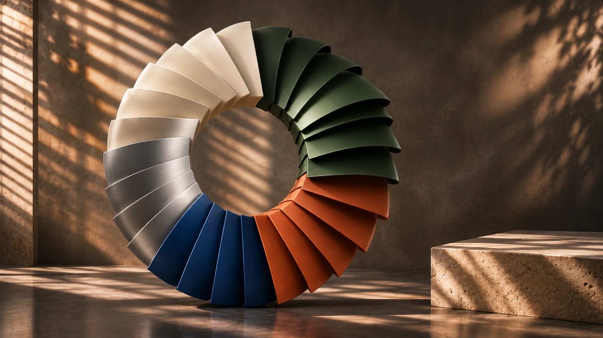

S.A.C. / Systems archive
Form meets
function.
Browse systems by family, operating concept and material. A curated, expandable reference library.
01 / Reference catalogue
The collection.
Designed for discovery, structured for growth. Products and materials have separate, connected detail pages. Changes to a material affect only the product surface; control and opening states visibly change the system. Explore materials ↗
Product and configuration references are selected from GH M2M Catalogue 2026 and visual studies. They are not a complete or approved SAC assortment. Illustrative colours, operation and technical data require product-level confirmation before publication.